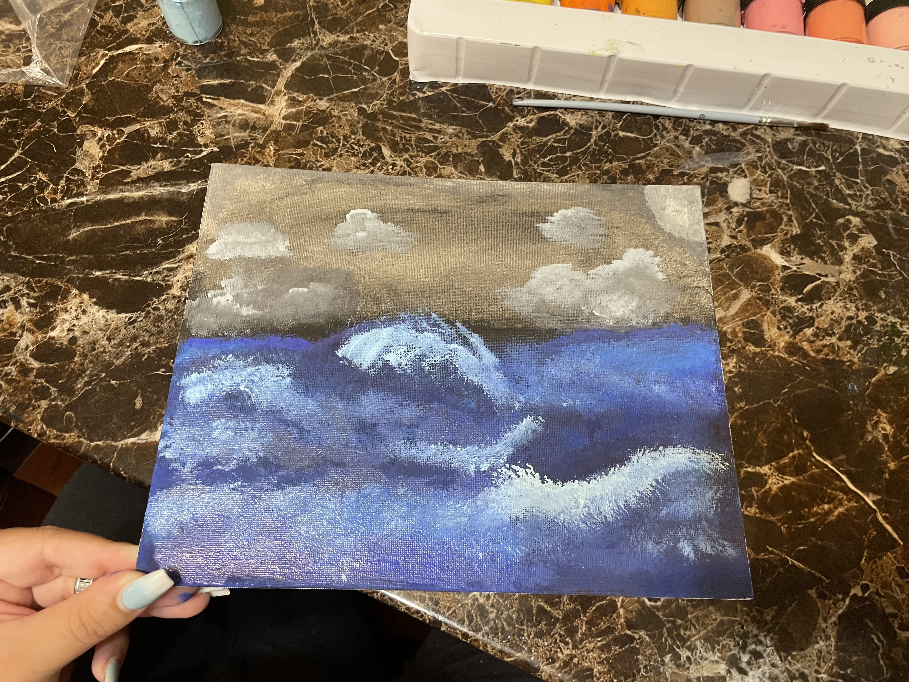
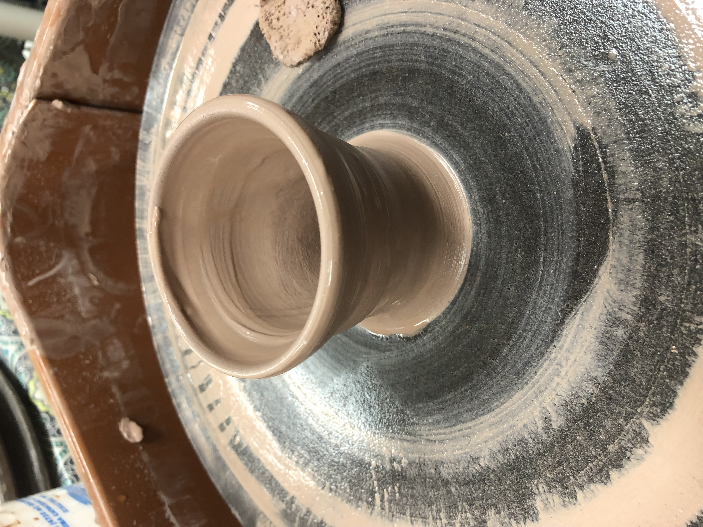
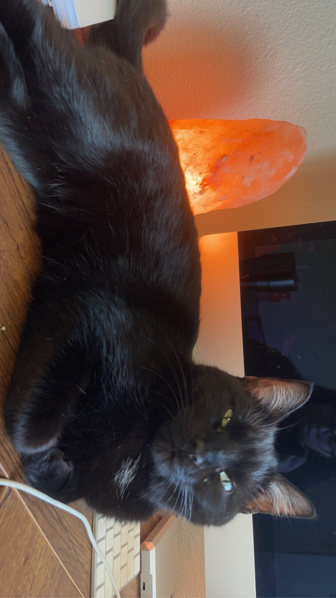
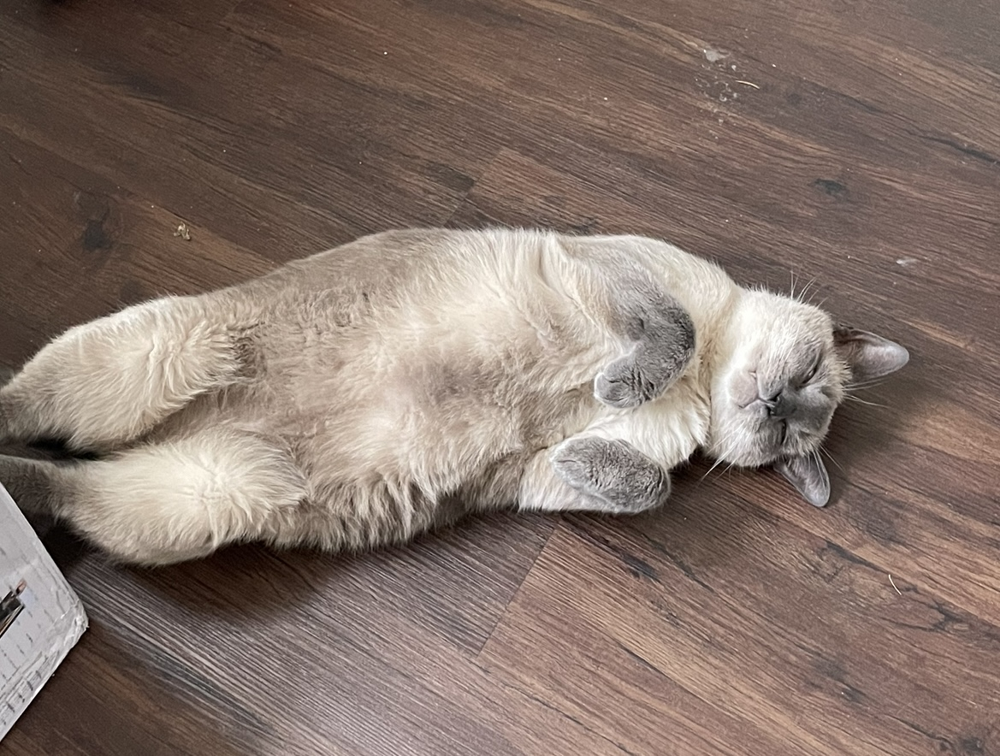

Welcome to the Hobbies and Skills I enjoy doing in my free time.
Hi All! Not only do I love canning and finding ways to live off of the land, I also enjoy art! I love to paint, draw and tattoo when I have the time to. I often draw a design for a few weeks to decide how I want it to look. If it is a portfolio of someone I will draw from photos of said person in which I use as a guide for shaping the details that define their face. For landscapes I like to visit the scene, take a photo that I feel captivates the essence and draw from that as a reference. Once I feel that I cannot add more to a drawing I decide to paint it. Below I have shared a few drawings of mine that I feel show my favorite styles. I am not as skilled in painting it is more so an interest I wish to persue. I have included a small painting I did below as well. I believe that it is therapeutic to paint out the feelings a place, person or memory brings to you, and this within itself is beautiful in every way regardless of skillset. Thank you for your time feel free to share some of your feedback on my art or ways I could improve via my contact page.


I successfully attended one sigular pottery class, which I enjoyed however I never returned due to the pandemic and hope to attend a few more classes. My husband was being silly with a bowl on his head to which I of course snapped a photo of the art in action! The photo of the black cat basking in the salt lamp is Puddy my female cat who is very stoic yet spiritual when it comes to lamps. The white cat is my male cat Sebastian who is 8 years old this year, who loves napping anywhere, anytime always!


